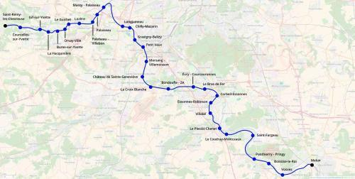

Tangentielle Essonne
Tangentielle Essonne
Saint-Rémy-les-Chevreuse - Melun
Une nouvelle tangentielle pour le réseau Île-de-France
La tangentielle Essonne serait un service destiné à relier les pôles importants de l'Essonne en particulier la vallée de l'Yvette et Évry. Elle partagerait les voies du RER B entre Saint-Rémy-les-Chevreuse et Massy - Palaiseau, puis utiliserait la ligne de Grande Ceinture entre Massy-Palaiseau et Petit-Vaux. Elle rejoindrait Melun après un itinéraire commun avec le RER F, branche Lisses jusqu'à Évry puis remonterait la vallée de la Seine par la ligne de Corbeil-Essonnes à Montereau.
Cette ligne permettrait de rationnaliser les dessertes Massy-Palaiseau - Petit-Vaux et Melun - Corbeil-Essonnes en les transformant explicitement en dessertes de type rocade et plus radiales comme c'est le cas actuellement par leur intégration respectivement dans les RER C et D.
Carte
{kind=link}

Cliquer pour agrandir
Stations
Si ce projet vous intéresse n'hésitez pas à le (re-)partagez sur les réseaux sociaux ou par courriel ou à en parler autour de vous.
Si vous souhaitez travailler à la concrétisation de ce projet, passez à l'action et contactez nous.
Commenter